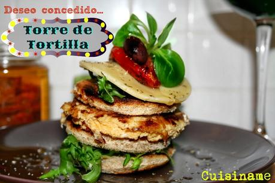

Recetas gourmet
Recetas saludables - El Gourmet

Ahora El Pan Nuestro de Cada Día III 15:30| Sucré Salé 16:00| Reposteria con Anna Olson 5 16:30| Postres caseros con Mauricio 17:00| Pastelería de Fiesta RECETAS En TV programas chefs noticias Recetas saludables
Si te gusta, compártelo Conduce: Enrique Fleischmann Una propuesta donde la principal regla es enseñar a cambiar los hábitos de comer y de cocinar. Todos los tips para saber qué ingredientes sanos y livianos en grasas y calorías se deben usar para crear platos sabrosos, nutritivos, sanos y por supuesto gourmet. El carismático chef mexicano Enrique Fleischmann posee una vasta experiencia en la materia y un gran curriculum en el que figuran trabajos realizados junto a los mejores de la gastronomía mundial como Paul Bocuse, Carlos Arguiñano y Juan Mari Arzak. Este show no se encuentra en el aire en este momento. Puedes ver nuestros shows actuales haciendo click aquí . Enrique FleischmannRecetas del programa
Salmón sobre zucchinis y salsa de soja al jengibre
Tallarines en salsa de mandarina al cilantro
Plato de frutos del bosque con costra de granola
Pollo con salsa de mango y pasta china
Rollos de pasta philo con bananas al tomillo
Mini lasagne de verduras
Ver todas RECETAS / EN TV / PROGRAMAS / TALENTOS / NOTICIAS / ANUNCIE /El Gourmet© 2021 - Todos los derechos reservados
Aviso Legal | Política de cookies - Términos y condiciones
Posted by Jack  Read more
Read more  Comments (15)
Comments (15)  2021.06.22 20:15
2021.06.22 20:15